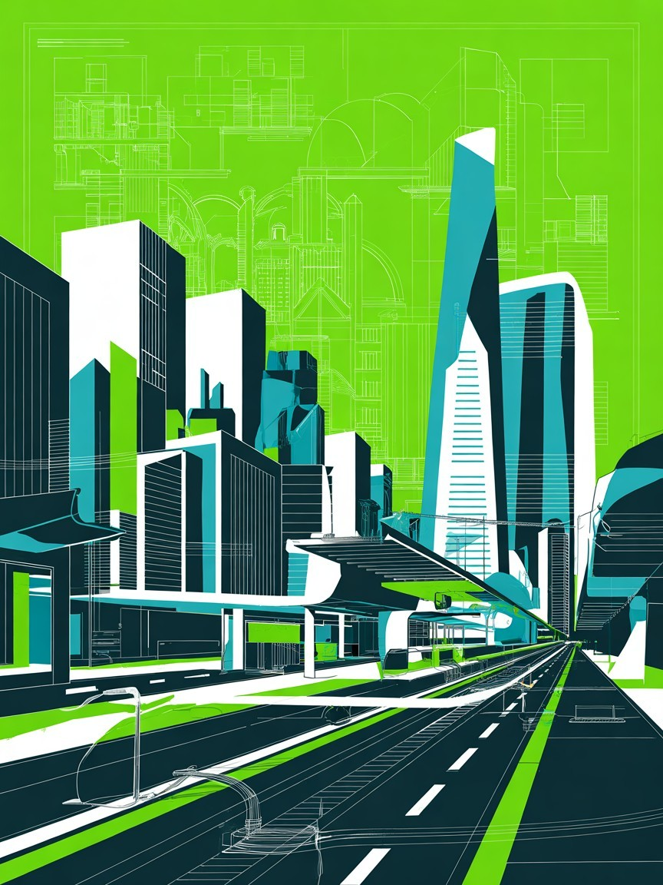

יוזמה
הגשה/בדיקה
הפקדה/פרסום
התנגדויות/אישור
תוקף/יישום
מה קורה בשלב זה?
מסע אינטראקטיבי בתהליך אישור תכנית בניין עיר
הוסיפו עד 10 שחקנים, בחרו דמות, מין ותפקיד
מסע אינטראקטיבי בתהליך אישור תכנית בניין עיר
כל השחקנים הגיעו למשבצת 50. הנה טבלת המיקומים הסופית:
אפשר לרענן את הדפדפן כדי להתחיל משחק חדש.